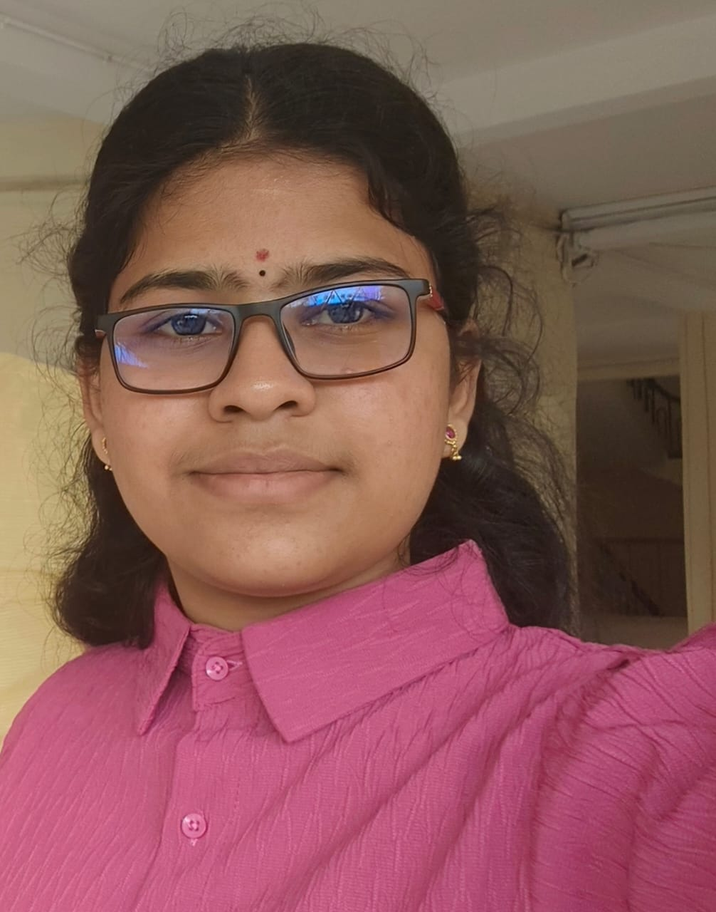

Welcome to my personal website
Hello! My name is Pabboju Manaswini, and I’m passionate about technology, learning, and exploring new fields. I was born in Siddipet, Telangana, and I'm currently pursuing my B.Tech in Computer Science at IIIT Hyderabad. This site is a small corner of the internet where I share my background, achievements, and skills.
Click here to download: My CV (PDF)